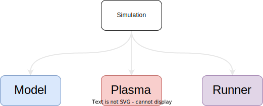
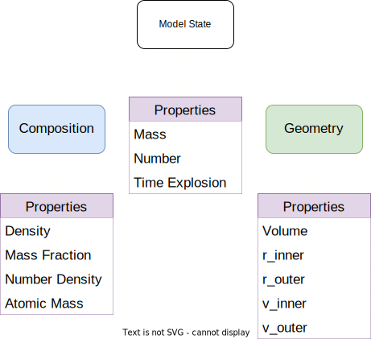

TARDIS is an open-source Monte Carlo radiative-transfer spectral synthesis code for 1D models of supernova ejecta. It is designed for rapid spectral modelling of supernovae. The mission of the TARDIS community is to develop open-source software instruments to analyze and simulate astronomical transients (supernovae, kilonovae, etc.) for research and education purposes.
In this report, I go over the various contributions I made to TARDIS over the summer.
TARDIS had an existing method to store simulations to a HDF file. However, there was not enough data being stored in order to re-create the simulation from the HDF file. So, my first objective was to create methods to store and re-create different parts of the simulation. The simulation consists of 3 main parts which are the model, the plasma and the runner.
TARDIS currently only works with radial 1D models. However, for future expansion, a model was needed which can work with other geometries. The model state was refactored as shown below to allow this:

I am extremely grateful to everyone at TARDIS especially my mentors - Jack O'Brien , Alexander Holas, and Marc Williamson for their incredible support and guidance. I would also like to thank Wolfgang Kerzendorf for helping us fit in and guiding us.
I would also like to thank my fellow GSoC contributors - Atharva Arya, Jayant Bhakar and Rohith Varma Buddaraju for helping me out.
Finally, I would like to thank Google Summer of Code for giving me this wonderful opportunity.